Technical Art, UI/UX Design, Game Design, Production.
Zona Eleitoral
Zona Eleitoral is a casual strategy game co-developed by Ilex Games and Fisch Sibs. It is available on google play store and apple store and is still in development, a steam version will be launched by the end of 2026.
As the Lead Technical UI/UX Designer I was responsible for designing and implementing the user flow and user interface, animating it, guiding the main Artist, balancing the needs and expectations of the Design, Accessibility and Engineering teams while closely contributing to Game Design decisions.
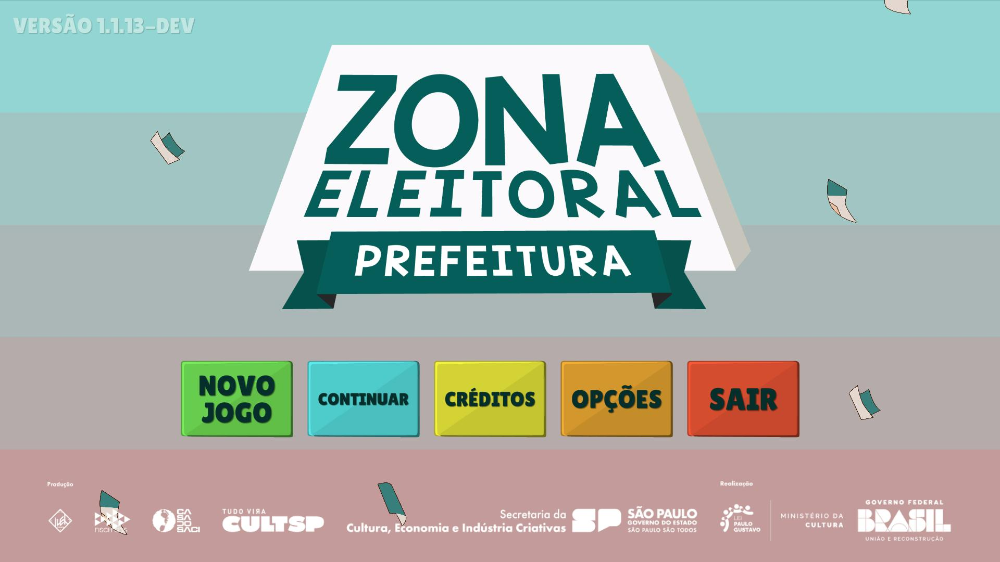
UI/UX Design
When I got into the project the game was in an early prototype stage and the need for a UI/UX designer that could work inside Unity emerged. The image below shows how character selection looked like at that point.
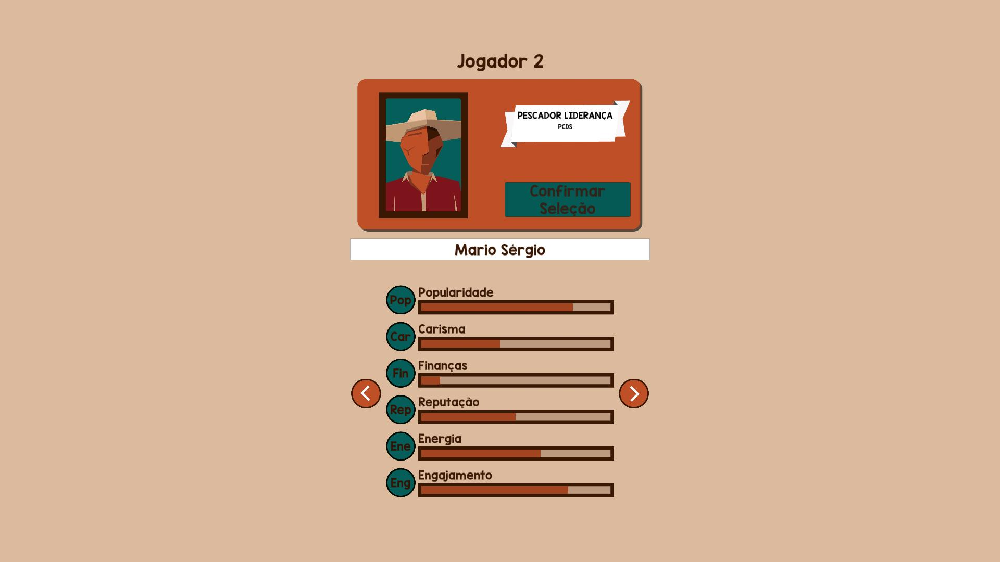
They already had a really good illustrator so part of my job was putting his skills to good use. One of the first things I did was re-designing match setup and character selection, using as a reference elements associated with the election theme like the urn and the 'santinhos', which are small flyers that politicians use to market themselves and pollute the city.
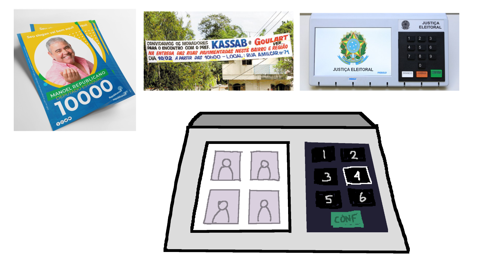
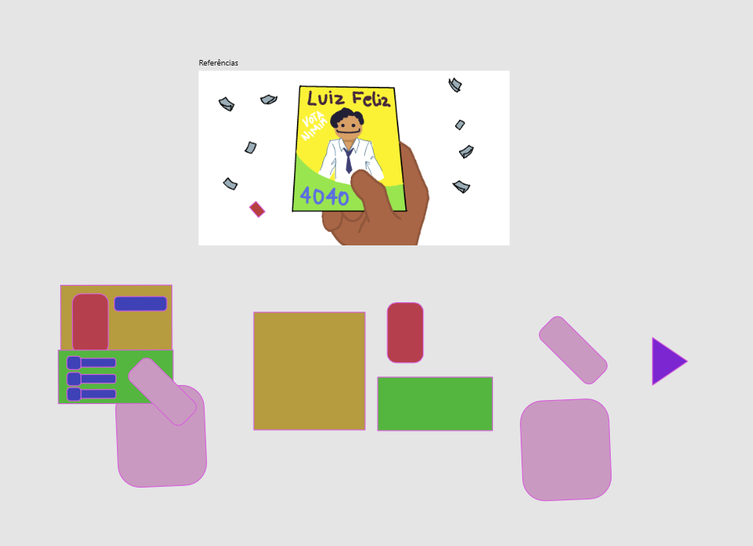
The images above is an example of how I would direct the illustrator production, and below how it came out in Unity.
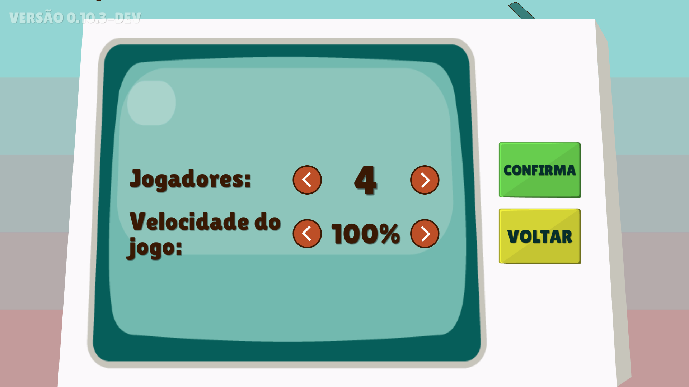
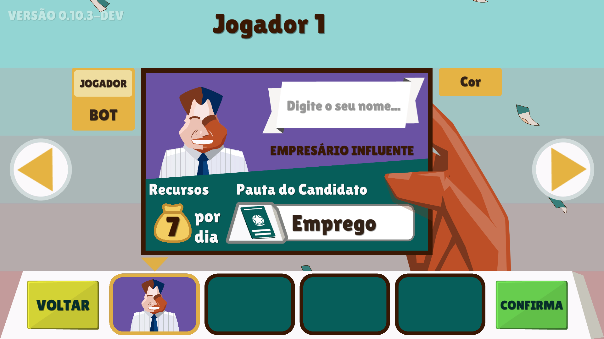
The game consists of acquiring votes on the different zones in the city, or in other words, asserting dominance in the map through actions.
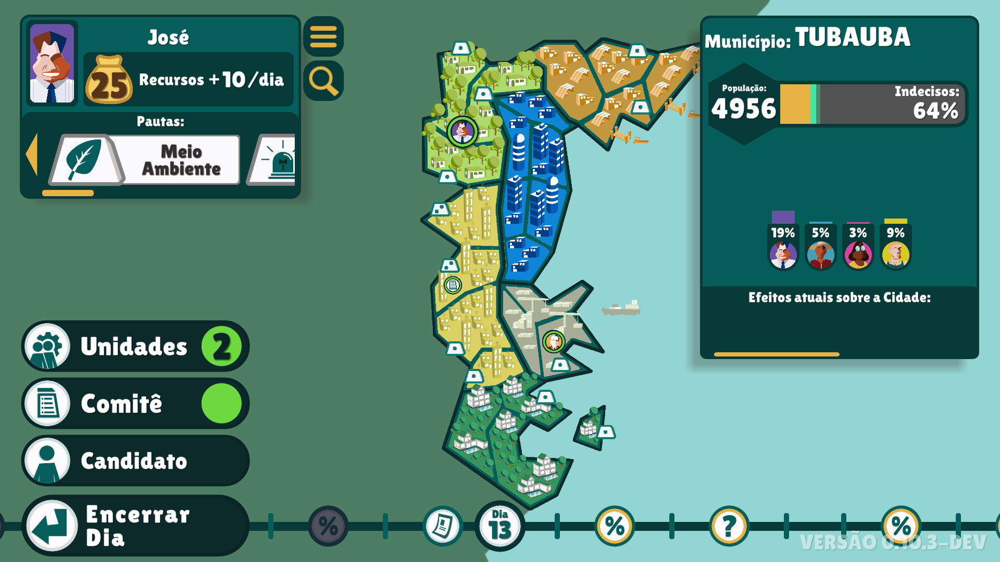
The first draft of the actions menu can be seen in the image below.
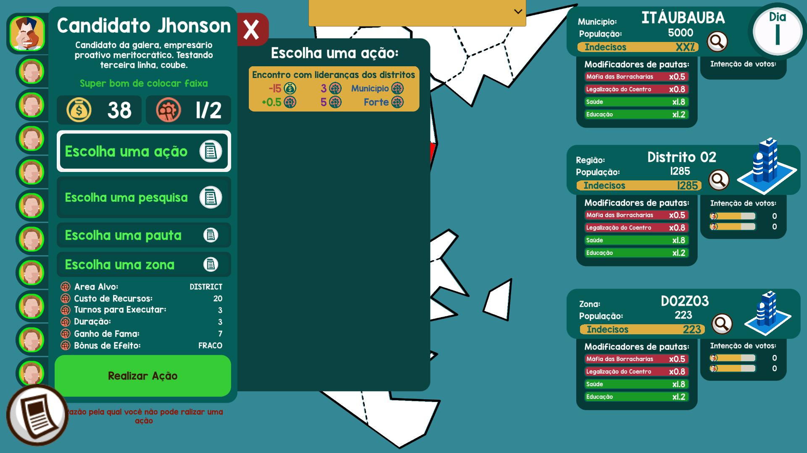
At that point the game was kinda confusing for the players, they should decide if they where doing an action or a research, which topic that action would be about and in which zone they would act upon. I've suggested that we should change that menu with a hand of cards, that should make it instinctive for the player on how to proceed, and since we had a good illustrator, the increased workload on art would not only be easily handled but also well harnessed.
The topic mechanic was still rough on the edges, the player was supposed to chose on while acting and that would turn his action more or less effective depending on zone complex data. I suggested that his actions would automatically be improved if he had one or more topics in his sleeve that matched up to 3 topics favored in the zone. Now the player had less friction on acting and the information was easier to be presented to them.
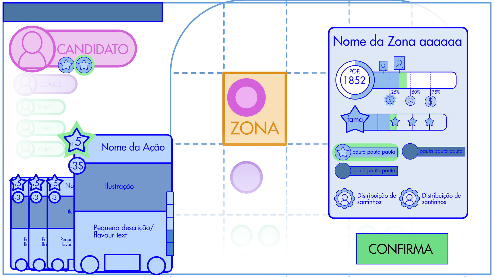
At the same time game design was increasing the cognitive load on the player with new character and action data, it was getting harder to onboard the player at the same time that accessibility was requiring the information to be bigger for players with impaired vision. That started to become a struggle for the user experience and interface design, so I took some time to propose a synthesis on the mechanics, merging some character, actions and zones attributes. Fortunately the team was happy with my proposal and we implemented them, reducing cognitive load, making on-boarding easier and the interface clearer.
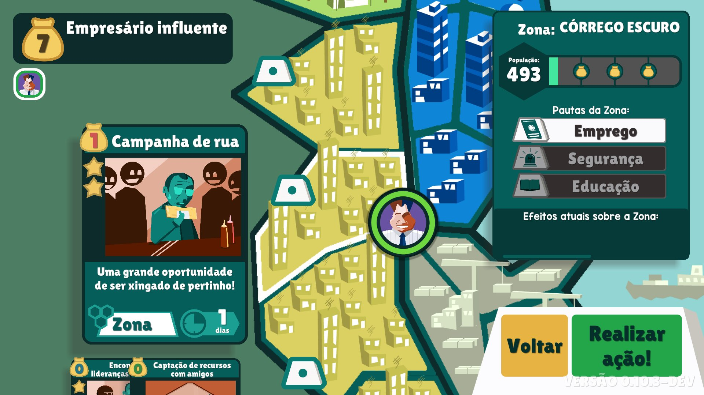
The research was moved to another screen, organized on different trees for better progression and understanding.
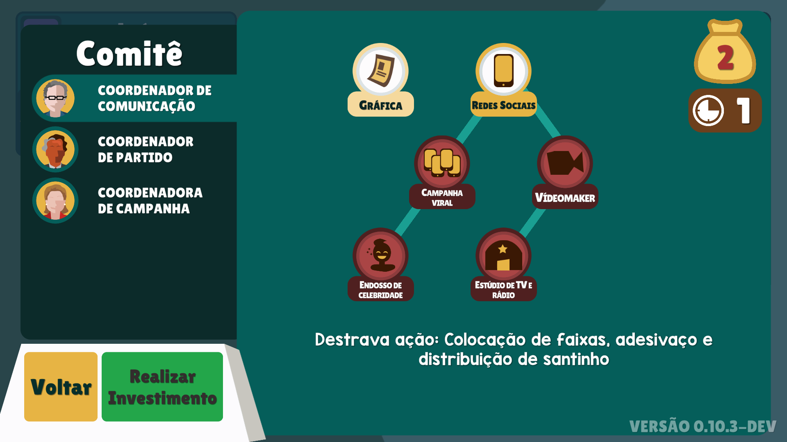
Events that pop up on the timeline were implemented, changing the outcomes of actions, giving player choices or just presenting election data in a more pleasant manner. That increased replayability since each match would have a different set of events.
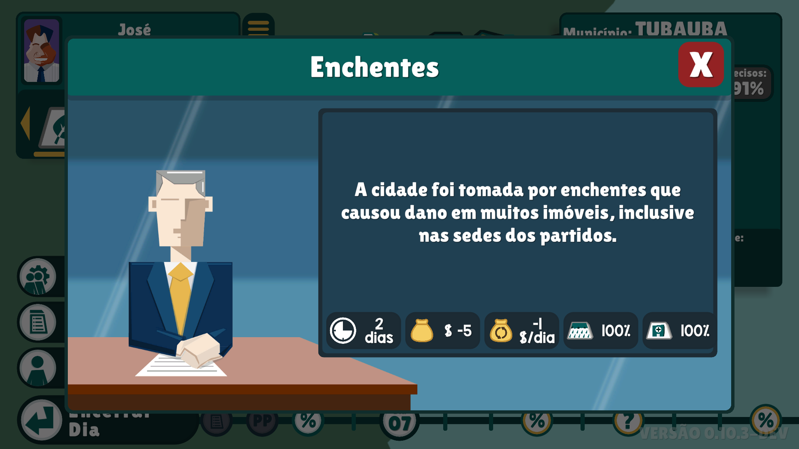
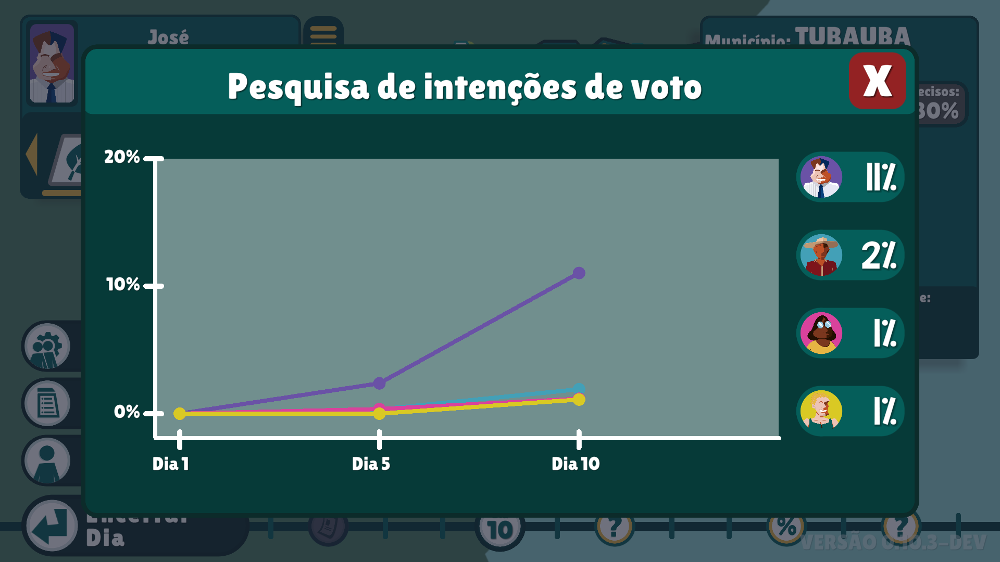
Conclusion
Zona Eleitoral is a really special project for me, It was the first time I had to handle that much UI information so tied to gameplay. It was challenging, rewarding and enriching. I definitely want to work on other UI heavy projects like this mobile strategy game.
A shout out to my companions at Ilex Games and Fisch Sibs!